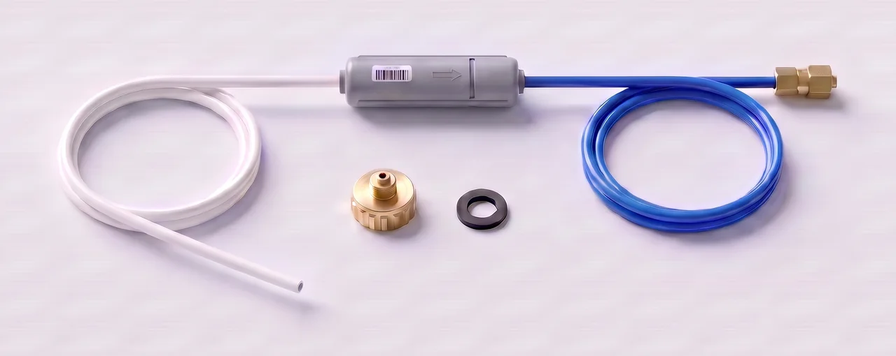
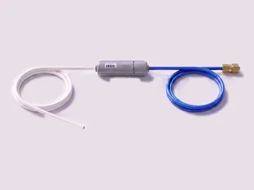
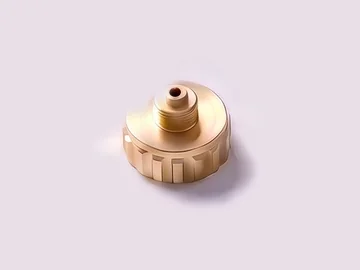
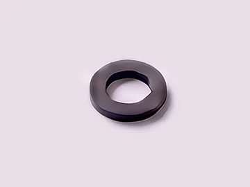

Preparation
Before you start
A simple connection, step by step. For service and more information: Newpan, the official importer.
Unplug the refrigerator
Pull the refrigerator's plug out of the socket before you start.
Close the main water tap
So no water comes out while you connect.
Cold drinking water only
Connect only to a cold drinking-water line. Connecting to hot water can cause a malfunction.
In the box
What's in the kit
The connection kit comes with the refrigerator. It has three items:

-

Water line
White tube → check valve → blue tube, already connected
The white end connects to the adapter on the tap. The blue end, with the brass nut, continues to the refrigerator.
-

Tap adapter
Brass adapter
Screw it onto the cold drinking-water tap.
-

Rubber washer
Black rubber ring, separate from the adapter
Seals the connection between the adapter and the tap, so it doesn't leak.
Use only the new kit that comes with the refrigerator, not an old tube.
Installation
Step by step
Connecting to the water supply
-
Step 1 of 8
Screw the adapter onto the tap
Screw the brass adapter onto the cold drinking-water tap.

-
Step 2 of 8
Connect the white end to the adapter
The water line comes pre-assembled: white tube → check valve → blue tube. Connect the white end of the water line to the adapter. The blue tube continues to the refrigerator.
Note: the arrow on the valve points toward the refrigerator.

-
Step 3 of 8
No sharp bends
Route the tube without sharp bends, and don't attach the valve to the refrigerator itself.
If you move the refrigerator after connecting, make sure the tube stays straight where it connects.


Connecting to the refrigerator
-
Step 4 of 8
Behind the refrigerator: remove the cap and loosen the nut
The connection point is on the back of the refrigerator, on the right side (seen from behind), at a height of about 75 cm. Remove the cap, then loosen and remove the compression nut from the refrigerator's water line.

1Where: on the back of the refrigerator, right side 
2Remove the cap, loosen the nut -
Step 5 of 8
Slide the nut on and push all the way in
Slide the nut onto the blue tube, and push the tube all the way into the refrigerator's water line.
No gap between the tube and the connection.

-
Step 6 of 8
Tighten the nut
Tighten the compression nut firmly, but not too tight.

Check and flush
-
Step 7 of 8
Open the tap and check for leaks
Open the main water tap slowly, and check both connections for leaks: at the tap and on the back of the refrigerator.

-
Step 8 of 8
Flush about 3 liters before first use
Plug the refrigerator back in, and run about 3 liters of water from the dispenser inside the door, to clean the system.
The first water comes out after a few seconds. That's air in the line, and it's normal.

That's it.
Your refrigerator is connected. Enjoy fresh water and ice.
If something isn't working
Quick troubleshooting
No water after 3 minutes?
Check that the main water tap is open, and that the refrigerator is plugged in.
A drip at one of the connections?
Check that the nut is tightened firmly, but don't over-tighten. If the leak doesn't stop, close the main water tap and contact Newpan service.
How do you know the flow is normal?

The full user manual
All the manufacturer's instructions and warnings for this model. The water-line connection is on pages 42–43.
The guide on this page is based on the manufacturer's instructions. In case of doubt, the instructions in the Samsung user manual apply. Installing the water line is not covered by the refrigerator's warranty.